Cosmic Timeline: Scroll Through the Universe
13.8 Billion Years Ago
A singularity explodes into existence, creating space, time, matter, and energy. The universe begins to expand rapidly in a moment known as cosmic inflation.

~200 Million Years After Big Bang
Gravity pulls hydrogen and helium together to form the first stars, igniting nuclear fusion and lighting up the cosmos.

~1 Billion Years After Big Bang
Stars cluster into vast galaxies. The Milky Way begins taking shape, swirling with billions of stars.
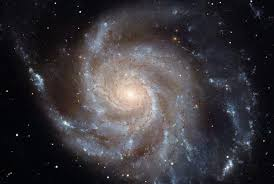
~4.6 Billion Years Ago
A massive cloud of gas and dust collapses, forming the Sun and the planets, including Earth.
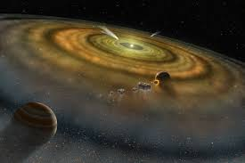
~4.4 Billion Years Ago
A Mars-sized body crashes into Earth, forming the Moon from the debris. The Moon stabilizes Earth’s tilt.
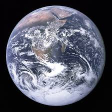
~4.4 Billion Years Ago
A Mars-sized body crashes into Earth, forming the Moon from the debris. The Moon stabilizes Earth’s tilt.
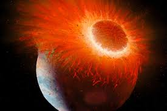
~3.8 Billion Years Ago
Simple microbes appear in Earth’s oceans. Life begins its long evolutionary journey.
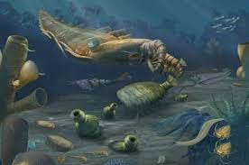
1609 CE
Galileo Galilei builds his first telescope and observes moons of Jupiter, revolutionizing astronomy.
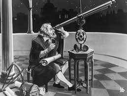
1957
The Soviet Union launches Sputnik, the first human-made object to orbit Earth.
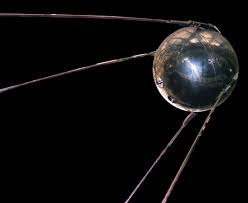
1961
Yuri Gagarin becomes the first human to orbit Earth aboard Vostok 1.
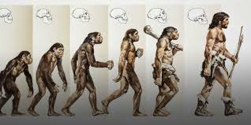
1969
Apollo 11 lands Neil Armstrong and Buzz Aldrin on the Moon. "One small step for man..."
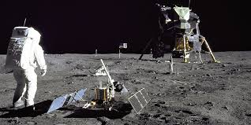
1977 – Present
Voyager 1 and 2 explore the outer solar system and continue into interstellar space, carrying the Golden Record.
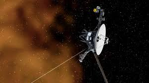
1990
Hubble sends back breathtaking images of distant galaxies and nebulae, deepening our cosmic knowledge.
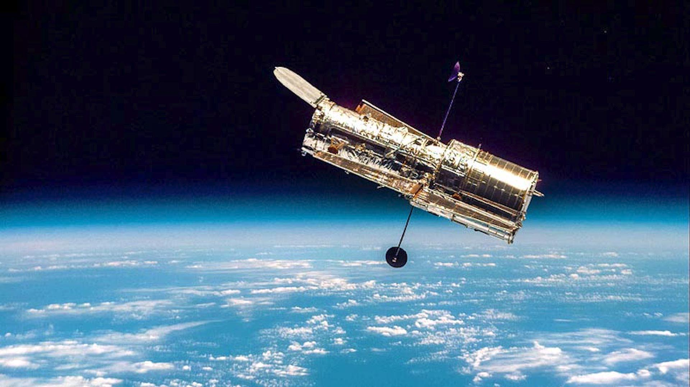
2021 – Present
JWST peers deeper into the universe’s past than ever before, capturing the first light of early galaxies.
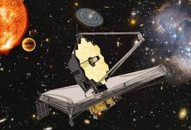
2025 and beyond
Artemis missions, Mars colonization plans, and deep space probes signal humanity’s next giant leap.
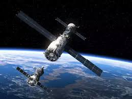